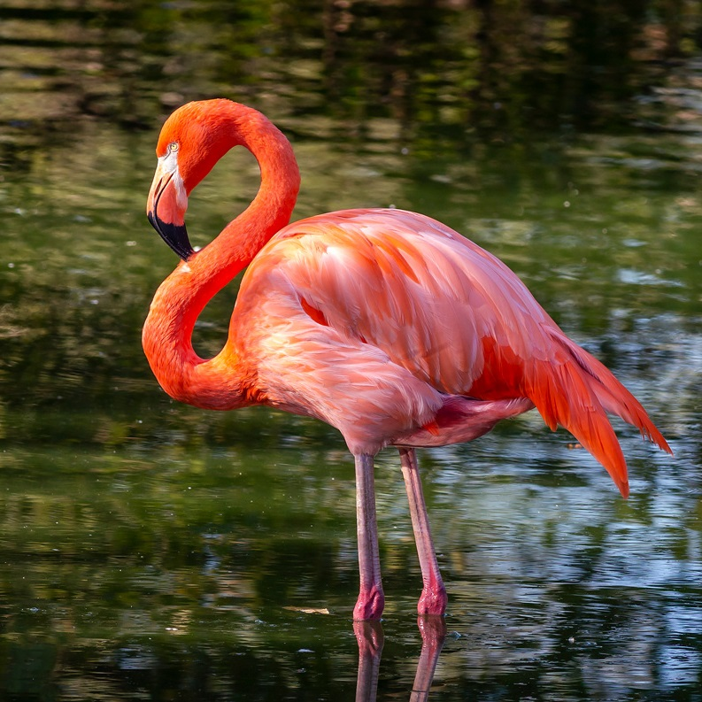

The American Flamingo
Phoenicopterus ruber

| Basic Information |
|---|
| Common Name(s): Greater Flamingo 1; American Flamingo 1 |
| Scientific Name: Phoenicopterus ruber 1 |
| Conservation Status: Least Concern 2 |
| Classification | ||
|---|---|---|
| Kingdom: Animalia 1 | Phylum: Chordata 1 | Subphylum: Vertebrata 1 |
| Class: Tetrapoda 1 | Subclass: Aves 1 | Order: Phoenicopteriformes 1 |
| Family: Phoenicopteridae 1 | Genus: Phoenicopterus 1 | Species: Phoenicopterus ruber 1 |
Physical Profile
Size Range
The American Flamingo, also known as the Greater Flamingo, has a length range for both sexes from 47.2 inches to 57.1 inches (120-145cm); the weight range for both sexes is 74.1 ounces to 144.6 ounces (2100-4100 g). 3
Identification Markings
The identification markings for American flamingos are a bright pink body, very long legs and neck, and a thick black-tipped bill. 3
Habitat & Geography
Habitats
American flamingos primarily live in shallow saline lagoons, estuaries, salt flats, and mudflats 3. They can also inhabit brackish water and alkaline lakes. 2 Mud and salt flats near lagoons are important nesting areas. 3
Distribution
American flamingos occur primarily throughout the Caribbean Islands and along the northern coast of South America. 2 Nearly the entire population occurs in the Caribbean, although a small isolated population of roughly 400-500 birds lives in the Galapagos Islands. 3 After breeding, birds may disperse widely from their nesting colonies in search of feeding areas. 3
Distribution Map
A distribution map showing the American flamingo's breeding and year round distribution. 3 The purple is Year-round, and the light blue is Nonbreeding.

Ecology & Behavior
Feeding and Diet
American flamingos eat mainly crustaceans, mollusks, insect larvae, and other small aquatic invertebrates. 3 They also eat algae, seeds, and other plant material. 3 They feed with their heads underwater, using their large tongues to pump water through comb-like structures called lamellae in their bills, which filter food from the water. 3
Behaviors and Adaptations
American flamingos are highly social birds that often feed, travel, and nest in large groups. 3 Their long legs allow them to move through shallow water while searching for food. 3 Their curved bills and specialized tongues help them filter small organisms from the water. 3 Standing on one leg may also help reduce heat loss. 4
Communication
American flamingos communicate using vocalizations and body movements. 4 They make loud honking calls, especially while flying, and use visual displays involving their heads, necks, wings, and feathers. 4 During breeding, large groups perform synchronized displays such as turning their heads and spreading their wings. 2 Parents can also recognize their chicks by their individual calls. 4
Life History Cycle & Breeding Behaviors
Breeding is strongly influenced by environmental conditions such as rainfall and food availability. 2 American flamingos are generally considered monogamous, and both parents participate in nesting and caring for the chick. 2 Caribbean birds build a volcano-shaped mound of mud, while Galápagos flamingos build nests from rocks and debris. 3 Females usually lay one egg, although clutch size can be one to two eggs. 3 Incubation lasts about 27–31 days. 3 Both parents incubate the egg and feed the hatchling a nutrient-rich substance sometimes called “flamingo milk.” 3 After about one or two weeks, chicks join large groups of young called crèches, while their parents continue feeding them. 3
Predators
American flamingos have relatively few natural predators because they often live in isolated or highly saline habitats. 4 Known predators include foxes, wild boars, badgers, vultures, and gulls. 4 Eggs and young chicks are more vulnerable to predators than adults.. 4